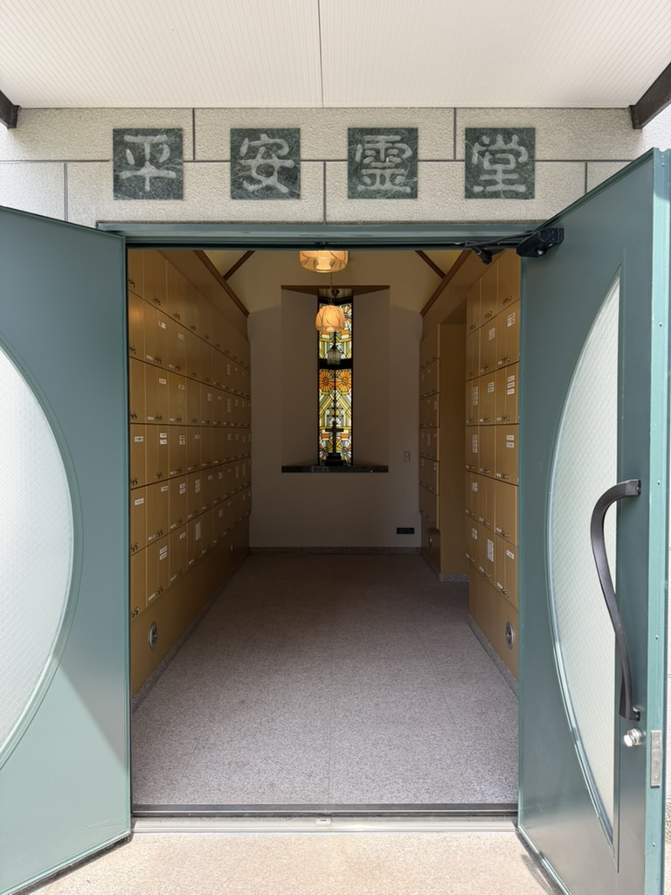
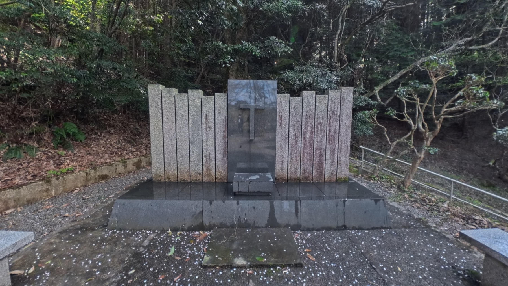

事前にご連絡ください
教会行事などにより対応できない場合があります。平安霊堂への墓参を希望される日時を、あらかじめ電話またはメールでお知らせください。
鳥取教会に設けられた納骨堂「平安霊堂」をご案内します。大切な方を覚え、神の平安のうちに静かに祈りをささげる場所です。

平安霊堂は、天に召された信仰の先達を覚え、ご遺族や関係する方々が祈りをささげるための納骨堂です。
教会は、死によっても失われることのない神の愛と、復活の希望を信じています。静かな祈りのひとときをお過ごしください。

鳥取教会には、教会に隣接する現在の平安霊堂のほか、円護寺霊園に教会墓地があります。円護寺霊園の教会墓地も、今日まで大切に守られています。
円護寺霊園の教会墓地は、いつでも自由に墓参いただけます。事前のご連絡は必要ありません。
場所や時代が移り変わっても、教会は天に召された信仰の先達を覚え、その祈りと信仰を受け継いでいます。
教会にある平安霊堂へ墓参される場合は、事前のご連絡をお願いしています。
教会行事などにより対応できない場合があります。平安霊堂への墓参を希望される日時を、あらかじめ電話またはメールでお知らせください。
平安霊堂の入口や開錠についてご案内します。初めてお越しになる方も、どうぞ遠慮なく教会へお声がけください。
ご家族や大切な方を覚え、静かに祈りをささげていただけます。献花などについては、事前に教会へご確認ください。